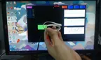
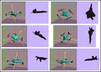
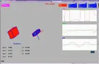
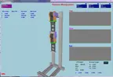
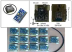
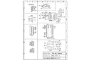
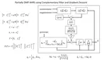
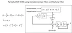
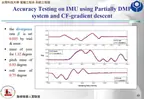
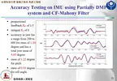

Project notes
IMU orientation estimation
Evaluating filtering methods for wearable orientation tracking.
- Discipline
- Robotics
- Context
- Master Thesis
- Period
- 2015–2016
- Support
- MRL-Taiwan Company

Cyclic motion




















11 images · Select a thumbnail to explore. Original project photographs and illustrations.
The work
For my master’s research, I investigated orientation estimation in a wearable system with 13 IMU modules. I compared sensor-fusion approaches against a passive manipulator equipped with encoders, then applied the methods to skeletal animation.
Project contributions & outcomes
- Combined digital motion processing with complementary, gradient-descent, and Mahony filters.
- Evaluated orientation estimates against encoder reference measurements.
- Reconstructed shoulder and elbow motion at a sampling rate of 24 frames per second.
Tools & focus
Sensor fusionQuaternionsEmbedded systems